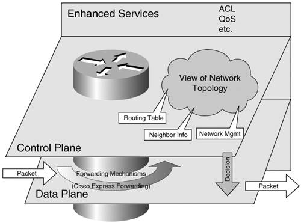
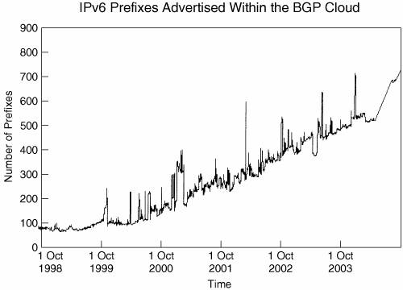

Aspects of Router IPv6 PerformanceIt is commonly understood that routers and layer 3 switches are performing functions at different levels of the OSI model. With the increased complexity of supported features, these devices started to operate at levels beyond the original first three. It is therefore expected that routers operate in one form or another on parameters that could relate to most of the seven layers of the OSI model. However, the main focus of a router's operation remains the network layer. Its functions can be separated into three categories:
Figure 11-1 provides a conceptual representation of these functions. The specifics of their implementation and operation depend on the router architecture. Figure 11-1. Conceptual Representation of a Router: Data and Forwarding PlanesEach of these router functions has its own performance characteristics. It is therefore important to qualify a router's performance in the context of its control-plane, data-plane, or enhanced-services operation. IPv6 presents each of these functions with specific new challenges. IPv6 Control PlaneWhen IPv6 is enabled on a router, its control plane starts to operate processes specifically for it. Protocol characteristics shape the performance of these processes and the amount of resources necessary to operate them:
Size is one of the natural concerns about the IPv6 networks and the IPv6 Internet. Larger networks are expected with the larger IPv6 address space. In principle, this implies larger routing tables and higher memory requirements to support them. At first, as deployments are incipient, this is not an issue. As the number and size of IPv6 networks increases, aggregation and strict prefix allocation through the provider-enforced hierarchy represent the means to control and reduce the size of the Internet routing table. Currently, there are two main address types in the IPv6 Border Gateway Protocol (BGP) routing tables:
The 6Bone network will be retired by June 2006. Allocation rate in the 2xyz::/16 range is growing steadily. More than 1000 prefixes are now (February 2005) allocated and present in the IPv6 Internet table. To monitor the growth and prefix distribution of the IPv6 Internet, several websites provide tools and statistics on IPv6 routing tables:
For a historical perspective, Figure 11-2 shows the prefix-allocation growth seen in the BGP routing tables since 1998 (source TILAB). Figure 11-2. Growth of IPv6 Internet Tracked by the Size of the BGP Routing Table At the time of this writing, the number of IPv6 prefixes in the BGP routing tables is 2573. According to the TILAB statistics, the main contributions to the total number of prefixes present in the routing tables were, at the date of the snapshot (January 2005), in this order:
The growth rate depicted in Figure 11-2 is expected to accelerate in the coming years. Similar to IPv4, tracking the size of the BGP IPv6 routing tables remains very important for service providers (SPs) to better plan network resources such as router memory. Independent of the routing table size, users want to know whether IPv6 routing protocols perform well in terms of convergence. Because of their similarity to the IPv4 counterparts, the convergence performance of the IPv6 routing protocols is generally similar to the IPv4 ones. In general, it should be expected that IPv6 and IPv4 will be competing for the control-plane resources. For this reason, bringing IPv6 into an operational network has to be done in a controlled way and with full information about its potential impact. If justified by the available router resources or the network conditions, limitations can be placed on IPv6 processes or the router's interaction with other network elements. The intent is to protect and reserve the CPU or memory resources for the existent revenue-generating IPv4 services. IPv6 and the Data PlaneThe data plane is responsible for forwarding the IP packets based on the decisions made by the control plane. The forwarding engine has to parse the relevant IP packet information. It then has to do a lookup to match the parsed information against the forwarding policies defined by the control plane. The performance of both "parsing" and "lookup" functions is impacted by IPv6 protocol specificities:
Depending on the router type, lookups are performed by a multipurpose CPU or by an application-specific integrated circuit (ASIC) with a fixed configuration or with a microcode. This impacts the performance and the versatility of the router functions. Software processing of the IPv6 lookup takes more time than for IPv4 because more bits must be processed. The multipurpose CPU is slower but can perform functions based on a limitless program. The ASIC with microcode allows for a certain degree of flexibility in the performed features, although the fixed ASIC performs only the functions for which it was initially designed. Because the IPv6 lookup is more demanding (theoretically four times more demanding), there is a natural tendency to leverage hardware-based lookup engines as much as possible. Hardware-based lookup designs generally lead to IPv6 line-rate forwarding at all interface speeds for most packet sizes. Note Not all hardware forwarding platforms in the market achieve line-rate forwarding of IPv6. It is therefore important to evaluate a router's capability, regardless of its architecture. Note The hardware forwarding option can come to the detriment of feature richness. If new features need to be added, the ASICs need to be redesigned, which is a much longer and more costly process than that of implementing it in software. The performance of the various processes and functions discussed in this section depends on the architecture of each router. An overview of these architectures is presented later in this chapter along with performance-data examples. |